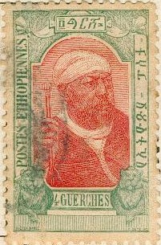
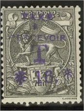
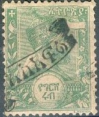
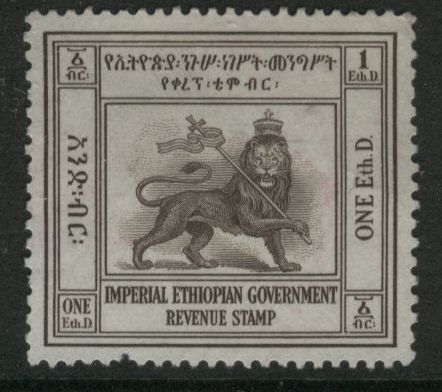

Return To Catalogue - Ethiopia (Etiopia) first issue
Note: on my website many of the
pictures can not be seen! They are of course present in the
catalogue;
contact me if you want to purchase it.

1/4 g green 1/2 g red 1 g green and red 2 g blue 4 g green and red (design as 2 g) 8 g brown and green 16 g brown and lilac (design as 8 g)
Many overprints exist on these stamps.


'11/2/1917.' and Ethiopean text on 4 g (left: overprint in black
and right: overprint in blue)
1/8 g violet and brown 1/4 g green and grey 1/2 g red and olive 1 g lilac and grey 2 g bleu and brown 4 g green and orange 6 g blue and orange 8 g olive and brown 12 g lilac and grey 1 $ red and grey 2 $ black and brown 3 $ green and orange 4 $ brown and lilac 5 $ red and grey 10 $ green and yellow Surcharged (1925-1929)
(Reduced size)
1/4 g on 1 $ 1/2 g on 5 $ 1/2 g on 8 g 1 g on 6 g (three types of overprint) 1 g on 12 g 1 g on 3 $ 1 g on 10 $
The forger Bela Szekula obtained the plates of these stamps with the help of a certain Jean Adolph Michel and made reprint-forgeries of the 1919 issue, offered as guaranteed genuine in used and unused condition. He also made 'errors', such as inverted or missing center pieces. See: http://www.doig.net/Sekula.html and http://www.doig.net/1919reprints.htm for more details. These reprints appeared around 1931. They can be recognized by the gum, which is cracked, while the original gum is smooth.
These reprints can also be found on post cards with the inscription "CARTE POSTALE Reproduction interdite – Collection Michel – Addis-Ababa" with forged cancels (the ones I've seen on the above mentioned site were all cancelled in the 1930's). Genuinely cancelled stamps are mostly used in the period 1919 to 1928. These postcards were never used in Ethiopia.
1/8 m orange and blue 1/4 m blue and red 1/2 m green and black 1 m red and black 2 m blue and black 4 m orange and brown 8 m lilac and brown 1 T brown and violet 2 T green and brown 3 T brown and green Overprinted with Ethiopian text in four straight lines (inauguration of new post office)

1/8 m orange and blue (black or red overprint) 1/4 m blue and red (violet overprint) 1/2 m green and black (violet or red overprint) 1 m red and black (black or violet overprint) 2 m blue and black (red overprint) 4 m orange and brown (violet or red overprint) 8 m lilac and brown (violet or red overprint) 1 T brown and violet (black or red overprint) 2 T green and brown (violet or red overprint) 3 T brown and green (red overprint) Coronation overprint with crown and 'NEGOUS TEREFI' 1/8 m orange and blue (violet overprint) 1/2 m green and black (red overprint) 2 m blue and black (red overprint) 8 m lilac and brown (blue overprint) 2 T green and brown (violet overprint) Airmail stamps with red or violet overprint (only valid on 16 August 1929) 1/8 m orange and blue 1/4 m blue and red 1/2 m green and black 1 m red and black 2 m blue and black 4 m orange and brown 8 m lilac and brown 1 T brown and violet 2 T green and brown 3 T brown and green Coronation of Haile Selassie, red, green or brown overprint with Ethiopian text and 'HAYLE SELASSIE 3 Avril 1930' 1/8 m orange and blue 1/4 m blue and red 1/2 m green and black 1 m red and black 2 m blue and black 4 m orange and brown 8 m lilac and brown 1 T brown and violet 2 T green and brown 3 T brown and green Overprinted with Ethiopian text in an ellipse

1/8 m orange and blue 1/4 m blue and red 1/2 m green and black 1 m red and black 2 m blue and black 4 m orange and brown 8 m lilac and brown 1 T brown and violet 2 T green and brown 3 T brown and green Surcharged 1/8 m (green) on 1 m red and black 1/8 m (red) on 2 m blue and black 1/8 m (green) on 4 m orange and brown 1/4 m (blue) on 1 m red and black 1/4 m (red) on 2 m blue and black 1/4 m (green) on 4 m orange and brown 1/2 m (blue) on 1 m red and black 1/2 m (red) on 2 m blue and black 1/2 m (green) on 4 m orange and brown 1/2 m (red) on 3 T brown and green 1 m (red) on 2 m blue and black 1 m (blue on top of red) on 2 m blue and black
1 g orange 2 g blue 4 g lilac 8 g green 1 T brown 3 T green 5 T red-brown
1 g red 2 g blue 4 g violet 8 g green 1 T brown 2 T red 3 T green
1/8 g red (Emperor) 1/4 g brown (railway bridge) 1/2 g lilac (Emperor) 1 g orange (Emperess) 2 g blue (Hayle Selassie) 4 g violet (Menelik II statue) 8 g green (Hayle Selassie) 1 T brown (Emperor) 3 T green (Emperess, different design) 5 T red-brown (Hayle Selassie, different design) Surcharged (1936) 1 c (blue) on 1/8 g red 2 c (red) on 1/4 g brown 3 c (blue) on 1/2 g lilac 5 c (blue) on 1 g orange 10 g (red) on 2 g blue Changed colors and red cross overprint (Red Cross issue) 1 g (+ 1 g) green 2 g (+ 2 g) red 4 g (+ 4 g) blue 8 g (+ 8 g) brown 1 T (+ 1 T) violet
25 c green 30 c brown 50 c red Different design 10 c brown 20 c violet 75 c orange 1.25 L blue
Overprint 'OBELISK 3 Nov. 1943'
Example:

1/4 g green 1/2 g red 1 g blue 2 g brown 4 g brown 8 g lilac 16 g black
(Reduced sizes)

1/4 g green 1/2 g red 1 g blue (red surcharge) 2 g brown (red surcharge) 4 g brown 8 g violet 16 g black (red surcharge)
Stamps overprinted with "T" or "TAXE A PERCEVOIR" also exist:

"TAXE A PERCEVOIR T" overprint
Lion with crown holding cross:

(Reduced sizes)
Ethiopia Booklet No. VI 'Ethiopian Fiscals and Fournier Forgeries' by Eric Reyne Cockrill Series Booklet No. 18 (I haven't read this book myself).
Doig's Ethiopia Stamp Catalogue: http://www.doig.net/EthiHome.html